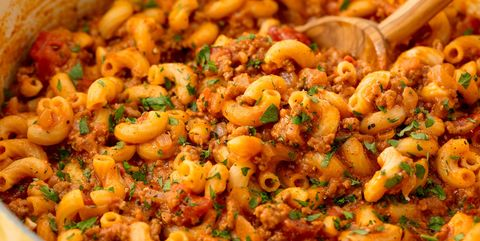

Goulash Recipe

Description
I want a pasta that!
Ingredients
- Olive oil
- 1 Yellow onion, chopped
- 2 Cloves garlic, minced
- 1 Lb. ground beef
- Kosher salt
- Freshly ground black pepper
- 1 Tbsp. tomato paste
- 1 1/4 Cup low-sodium beef broth
- 15 Oz tomato sauce
- 15 Oz diced tomatoes
- 1 Tsp. Italian seasoning
- 1 Tsp. paprika
- 1 1/2 Cup elbow macaroni, uncooked
- 1 Cup shredded cheddar
- Freshly chopped parsley for garnish
Steps
-
In a large skillet over medium heat, heat oil. Add onion and cook until soft, about 5 minutes. Add garlic and cook until fragrant, about 1 minute more.
-
Add ground beef and cook until no longer pink, about 6 minutes. Drain fat and return to pan. Season with salt and pepper.
-
Add tomato paste and stir to coat, then pour in broth, tomato sauce, and diced tomatoes. Season with Italian seasoning and paprika, and stir in macaroni. Bring to a simmer and cook, stirring occasionally, until pasta is tender, about 15 minutes.
-
Stir in cheese and remove from heat.
-
Garnish with parsley before serving.